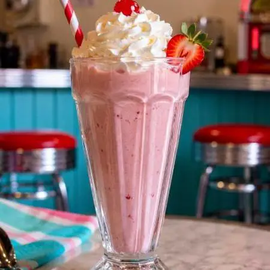
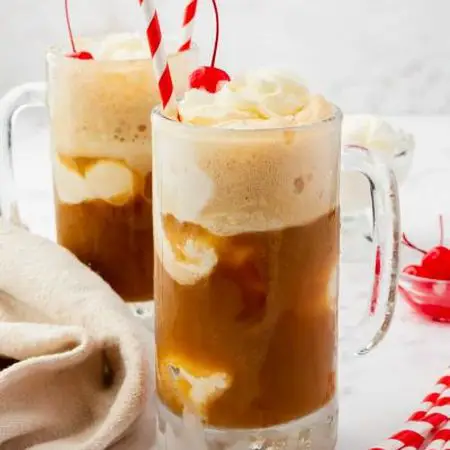
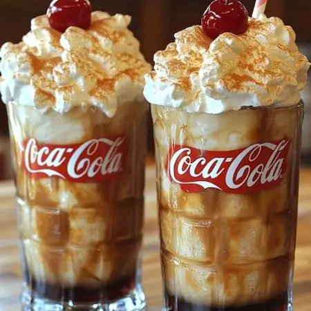

Our Menu
All-day breakfast, bottomless malts, and a jukebox in the corner. That's the deal at Ruby's. Order up any of these classics, any time of day.
All-Day Breakfast
Fountain Drinks
-

Jitterbug Malt
A milkshake's older, maltier cousin, a Ruby's signature.
-

Neon Sign Milkshake
Classic flavors, blended thick and served in a frosted glass.
-

Route 66 Root Beer Float
House root beer over vanilla ice cream, the way it's always been done.
-

Cherry Bomb Cola Float
Cherry cola over vanilla ice cream, for the ones who like it a little tart.
How to Order
- Grab a booth or a seat at the counter.
- Flip through the menu and flag down your server.
- Place your order, then mix and match breakfast with a fountain drink of your choice..
- Sit back, enjoy the jukebox, and we'll bring it right out.
Diner Lingo
Part of the fun at Ruby's is talking like it's still the golden age of the diner counter. Here's a quick glossary to help you order like a regular:
Soda Jerk Slang
- 86'd:
- Out of stock; as in, "the waffles are 86'd until tomorrow."
- The Works:
- An order with every topping or side included, no substitutions.
- Sunny Side Up:
- Eggs fried on one side only, yolk left runny and facing up.
- Adam and Eve on a Raft:
- Old diner slang for two poached eggs on toast.